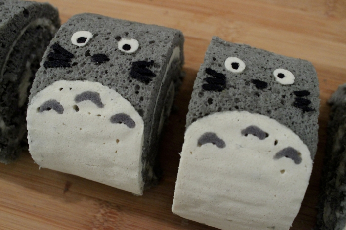
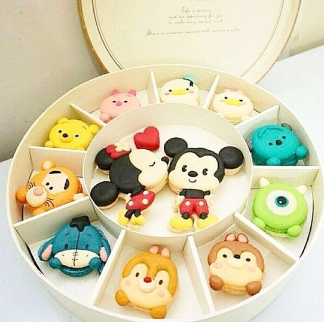

How to make Cake, Pate a Choux Dough, Macarons, Canales, and Brownies!
This website has combinations of the different foods we like to make! Here you will be able to see how simple it is to make foods that usually look too hard to accomplish. There may also be some tips and tricks throughout!
Cake
The dictionary definition of a cake is: An item of soft, sweet food made from a mixture of flour, shortening, eggs, sugar, and other.
Personally I really like to bake so I hope this website will give you inspiration to try some recipes out.
One of the things you will learn how to make is a roll cake with filling!
Pate a Choux Dough
Pate a Choux is a very versatile dough used for many different puff pastry's. You can make Creampuffs and eclairs with pate a choux dough and you can fill them with pastry cream or whipped cream. Whipped cream is my fav btw... but you can do what ever you want I guess. You can also cover them with some ganache.
It's what makes the pastry go... POOF
If you want to learn how to make this then click on the Pate a Choux bar!
Macarons
Macarons are the BEST cookies in the world!! They are crunchy but chewy but also soft at the same time. You can fill them with all sorts of fillings like buttercream, ganache, fruit compote, etc. You need to try them they are my favorite treat to eat during the year.
If you want to lear how to make them then click on the Macaron bar!!
Canales
Canales are small French pastries with a custard like center, and a dark caramelized crust. It is flavored with vanilla and rum. It is a very fun pastry to make! If you want to learn how to make these sweet treats click on the Canales bar!!!

Brownies
Brownies are a mixture of chocolate, eggs, and vanilla. It is chocolatey, gooey, fudgy goodness!! If you'd like to learn how to make Brownies, click on the Brownies bar!!